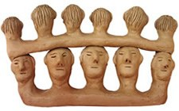
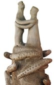
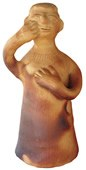
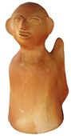
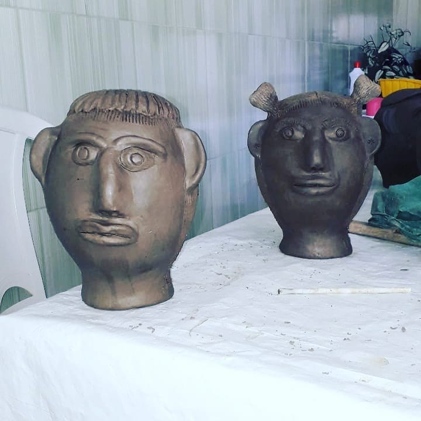
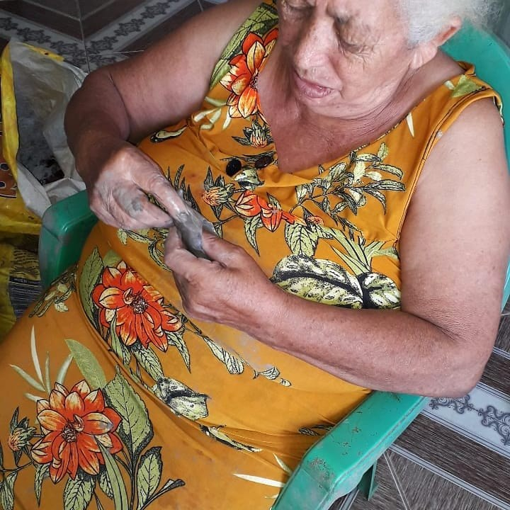
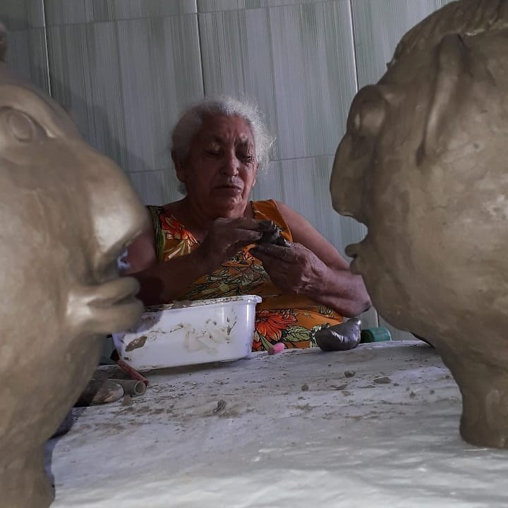

Irinéia Rosa Nunes e Antônio Nunes
Ancestralidade quilombola modelada no barro do Muquém.
Mestra Irinéia Rosa Nunes da Silva é referência da cerâmica do Muquém, em Alagoas. Antônio Nunes, seu companheiro de vida e trabalho, conhecido como Toinho, também participa dessa história do barro.
Irinéia Rosa Nunes da Silva nasceu no povoado quilombola de Muquém, em União dos Palmares, Alagoas, em 7 de janeiro de 1949, conforme registro oficial da Secult AL. Filha de paneleira, cresceu em contato com o barro e com o ofício das mulheres da comunidade.
A partir de encomendas de ex-votos, passou a modelar cabeças, pés e outras partes do corpo; depois ampliou seu repertório para pessoas, bichos, plantas, casais, santos e cenas de memória coletiva. Em 2005, foi reconhecida como Patrimônio Vivo de Alagoas.
Antônio Nunes, conhecido como Toinho, foi seu companheiro de vida e de trabalho. No ateliê, preparava o barro e também produzia peças; faleceu em 2020, por complicações da Covid-19.
A trajetória do casal aprofunda a dimensão comunitária do Muquém: Irinéia é herdeira de mulheres louceiras — mãe, avó e vizinhas que faziam potes, panelas e brinquedos de barro. Antônio pertence à mesma cultura material, marcada por telhas moldadas na coxa e panelas feitas por mulheres de sua família.
No barro do Muquém, rosto e território se tornam memória.
Para observar na peça
- Cabeças arredondadas e expressivas
- Penteados, barbas e traços fisionômicos
- Tom avermelhado da queima
- Relação entre peça, promessa, memória e comunidade
Materiais e técnica
Galeria de referências de estilo
Imagens públicas reunidas para reconhecer linguagem, materiais e técnica. As peças da exposição são vistas apenas ao vivo.







Fontes e créditos
- Secult AL — Dona Irinéia, Registro do Patrimônio Vivo https://secult.al.gov.br/politicas-e-acoes/registro-do-patrimonio-vivo/mestres-do-rpv-al-por-ano-de-premiacao/ano-2005/488-dona-irineia
- Enciclopédia Itaú Cultural — Mestra Irineia http://enciclopedia.itaucultural.org.br/pessoas/196093-mestra-irineia
- Rede Artesol — Mestre Irinéia https://redeartesol.org.br/rede/mestre-irineia/
- Arte do Brasil — Irinéia Rosa Nunes da Silva e Antônio Nunes http://www.artedobrasil.com.br/irineia_rosa.html
- G1 — Patrimônio Vivo de Alagoas, Dona Irinéia https://g1.globo.com/al/alagoas/arquivo/issoealagoas/noticia/2022/04/02/patrimonio-vivo-de-alagoas-dona-irineia-continua-esculpindo-pecas-de-barro.ghtml
- Referência de acervo da equipe — OCR e conferência visual